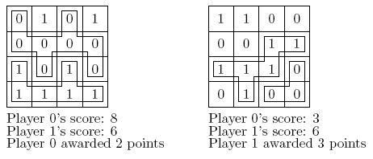

1's randomly placed on the board. Starting with player 0, each player puts his/her
number in one of the empty squares on the board. After the board is filled,
each player's score is equal to the largest connected region on the board
filled with that player's number (where a connected region is one where for
any two squares in the region a path exists consisting of only N/S/E/W moves).
The player with the highest score wins, and is
awarded the difference between his/her score and the score of the other
player. Two examples of
finished games are shown below, with the largest connected regions for
each player outlined.
Note in the second example that the two sections with 2 0's each are
not connected.

In order to test how good this game is, the gang at Gazillion has hired
you to write a program which can play the game. Specifically, given any starting
configuration, they would like a
program to determine the best move for the current player, i.e., the
score which maximizes the points awarded to that player (or minimizes those awarded to the
player's opponent).
Input will consist of multiple test cases. Each test case will start
with a line containing a positive integer n
( 8
) indicating the size of the
board. Next will come
n
lines describing the current board layout (row 0 first, followed by
row 1, etc). Each of
these lines will contain n
characters taken from `0', `1'
and `.', where `.'
represents an empty square. The first character will be in column 0,
the second in column 1, etc. The number of 0's on the board will either be equal to the number
of 1's or one greater, and there will be between 1 and 10 (inclusive) empty squares.
The last case is followed by a line containing 0 which indicates
end-of-input and should not be processed.
8
) indicating the size of the
board. Next will come
n
lines describing the current board layout (row 0 first, followed by
row 1, etc). Each of
these lines will contain n
characters taken from `0', `1'
and `.', where `.'
represents an empty square. The first character will be in column 0,
the second in column 1, etc. The number of 0's on the board will either be equal to the number
of 1's or one greater, and there will be between 1 and 10 (inclusive) empty squares.
The last case is followed by a line containing 0 which indicates
end-of-input and should not be processed.
For each test case, output a single line containing two items: the
coordinates of the best move for the player and the best point total achieved by that
player. In case of ties, print the move which comes first lexicographically. Use the format
shown in the sample output.
4
01.1
00..
.01.
...1
4
0.01
0.01
1..0
.1..
0
(1,2) 2
(2,2) -1